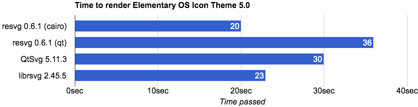

The main performance bottleneck encountered by the Valkyrie poster system is the offline rendering problem of SVG. The rendering method currently used by Valkyrie is to use puppeteer to open Headless Chrome to take screenshots to obtain pictures. Headless Chrome can solve many compatibility problems, but its own efficiency is relatively low. A preliminary investigation of the technical solution of the rendering problem of SVG was carried out.
Headless Chrome (including backend optimizations)
Continuing to use Headless Chrome also has some room for optimization. The current usage plan is to spell out an SVG file through the SVG template and throw it into the Chrome for rendering.
Question:
The rendering time itself is relatively long, and when processing multiple concurrent requests, it relies on the resource pool to wait for implementation, so each core can only process one at the same time , and four ten-core machines have 40 QPS. Every time you want to make a new request to render, you have to replace the picture and then take a screenshot. This replacement process is also a waste of time.
Solutions for optimization:
You can refer to the Sprite Graph used when making the game, use each Headless as a resource pool, and each page can render a certain number of pictures. When calling the screenshot API, use the Meta-Data to store the location of the specific page under a certain namespace. Take screenshots, so that the configurable resource pool expands a large part, and the number of concurrency processed can also be increased.
PS: Another optimization point is the expansion of the content of the meta-data of the Master node. If we know that a specific Page has currently rendered a certain template, we can directly modify the parameters of the rendered DOM. Take a screenshot after the parameter.
RESVG solution
https://github.com/RazrFalcon/resvg The implementation of resvg has a relatively complete implementation of SVG 1.1, but resvg still lacks some SVG solutions that may be needed in the future. https://github.com/RazrFalcon/resvg/blob/master/docs/unsupported.md https://razrfalcon.github.io/resvg-test-suite/svg-support-table.html The link above shows a list of features that resvg does not currently support.

Resvg itself uses cairo as the underlying drawing engine, which is efficient enough to be used as a direction for future implementation. At present, the syntax range we use the svg syntax itself is relatively biased, and most of the syntax is style support implemented using CSS.
- We should try more CSS support
- Or avoid using CSS in SVG and implement these functions through the default text, path, pattern
Skia Program
Skia’s scheme is similar to resvg’s scheme. There is not much SVG syntax supported by Skia itself, and currently only mono’s SkiaSharp is available for bindings other than Cpp https://github.com/mono/SkiaSharp.Extended Skia’s drawing efficiency is very high, and it is the underlying framework for graphics processing such as Android and Chrome. SVG pictures of about 8000h can be drawn in only about 200~ 300 ms.
However, SkiaSharp’s expansion package has less support for SVG. I still add the image tag to load the network image (the network io will also increase a lot of rendering time). Therefore, if you want to use Skia’s solution, you need to have more knowledge of Skia’s SVG., and then modify Skia’s Binding.